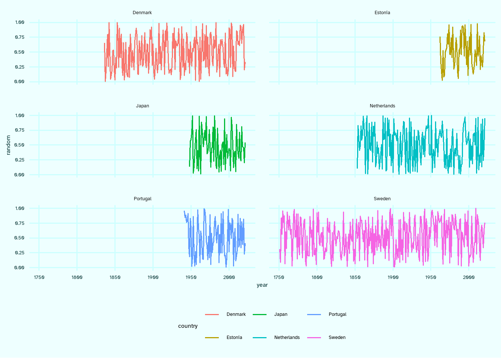
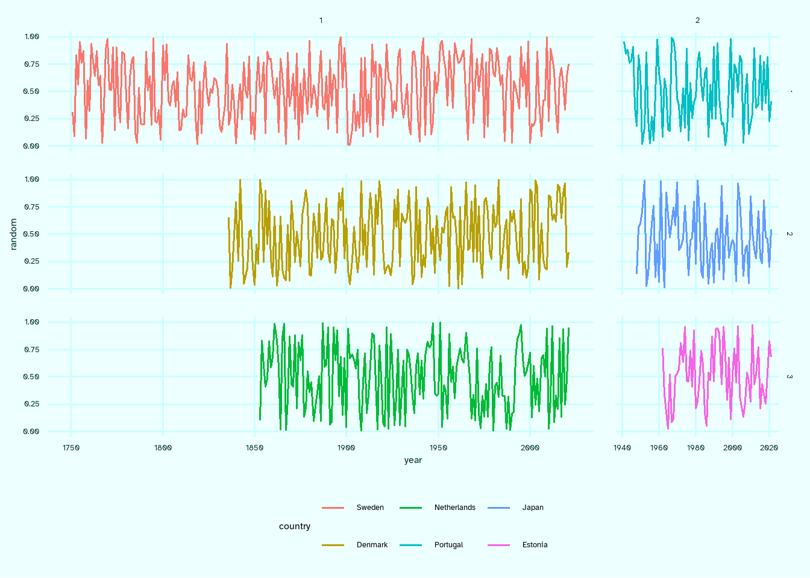
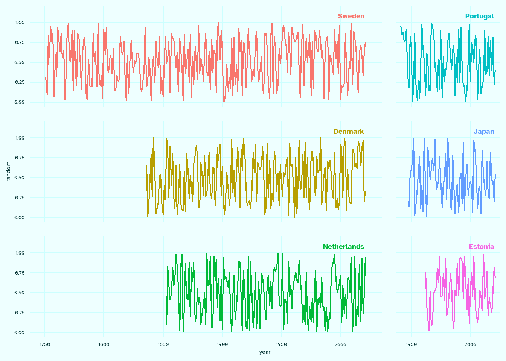

![]()


set.seed(911)
raw <- tibble(
country = c("Sweden", "Denmark", "Netherlands", "Portugal", "Japan", "Estonia"),
n_years = c(271, 186, 169, 81, 74, 60)
) |>
# mutate(country = country |> as_factor()) |>
group_by(country) |>
group_modify(~ runif(n = .x$n_years) |> tibble(random = _)) |>
mutate(year = 2022 - seq_along(country)) |>
ungroup()Faceting1 is probably the most distinctive feature that defined the early success and wide adoption of ggplot2. Small-multiples are often a great dataviz choice.2 But one common problem is when your panels for the subsets of data require vastly different amount of space. By default the panels in faceted ggplots are all of the same size. If the data subsets are very different in size – a common case would be time series of varying length – this results in a lot of plot space wasted in the panels with little data to show. In this post I’m showing how to deal with this common issue.
1 This is the term used for small-multiples in ggplot2
2 See the post in which I improve an overloaded line chart using small-multiples
Let me first show you the solution. The cornerstone source of data in demography is Human Mortality Database. It provides demographic data of highest possible quality for a selection of available countries. The availability of data varies vastly across countries – from 270+ years in Sweden to a handful of decades in many other countries with less exceptional population data statistics. Here are two plots from my recent papers that use HMD.
The trick in these plots is that countries are arranged by the length of time series. The width of each panel is set to the longest time series observed among the countries in the column of small multiples. This is easily achieved via the parameter space = "free" in the facet_grid() call.
One slightly annoying nuance is that the space = "free" parameter is only available facet_grid(). That’s why we need to specify both column and row variables for the layout of small multiples. Yet, usually we have just one meaningful faceting variable in such a setup, country in the examples above. That’s why the steps of data preparation for these plots included the creation of variables row and column that explicitly located the position of each small multiple. You can find code that replicates both figures shown above here and here. To illustrate the approach in this post we’ll use a minimal example with generated data.
Consider a case when we have 6 countries, 3 of which have relatively long time series and 3 have relatively short period of observed data. To stay a bit closer to the examples above, let’s say that we have data for Sweden (271 years worth of data), Denmark (186 years), Netherlands (169), Portugal (81), Japan (74), and Estonia (60). Let’s generate some random data of the specified time series’ length.
Let’s say I want a plot with 3 rows and 2 columns. First, here’s how a simple faceted plot would look like.
raw |>
ggplot(aes(year, random, color = country))+
geom_path()+
facet_wrap(~country, ncol = 2)
See how much space is just wasted in the plot.
Next, we’ll do the trick outlined above: arrange the countries by the length of available data and shrink the unused space in the two columns.
arr <- raw |>
mutate(
country = country |> as_factor() |> fct_infreq()
) |>
arrange(country, year) |>
# create facet positioning variables on a 3x2 canvas
mutate(
row = country |>
lvls_revalue(
new_levels = 1:3 |> rep(2) |> paste()
),
col = country |>
lvls_revalue(
new_levels = 1:2 |> rep(each = 3) |> paste()
)
) |>
ungroup()
arr |>
ggplot(aes(year, random, color = country))+
geom_path()+
facet_grid(row~col, scales = "free_x", space = "free")
That’s it, the rest is just visual polishing of the plot. At the very least, we need to get rid of the facet strips which are now meaningless counts of rows and columns and add country names as text annotations.
arr |>
ggplot(aes(year, random, color = country))+
geom_path()+
facet_grid(row~col, scales = "free_x", space = "free")+
geom_text(
data = function(x) x|> distinct(country, row, col),
aes(label = country), x = 2020, y = 1.05,
hjust = 1, vjust = 0, size = 5,
family = "ah", fontface = 2
)+
scale_y_continuous(limits = c(0, 1.15), breaks = seq(0, 1, .25))+
scale_x_continuous(breaks = seq(1750, 2000, 50))+
theme(
legend.position = "none",
strip.text = element_blank()
)
Enjoy more dataviz freedom with faceting tricks =)
NoteThis post is one in the faceting series. Other posts:
References
Aburto JM, Schöley J, Kashnitsky I, Zhang L, Rahal C, Missov TI, Mills MC, Dowd JB, Kashyap R. 2022. Quantifying impacts of the COVID-19 pandemic through life-expectancy losses: A population-level study of 29 countries. International Journal of Epidemiology 51: 63–74 DOI: 10.1093/ije/dyab207